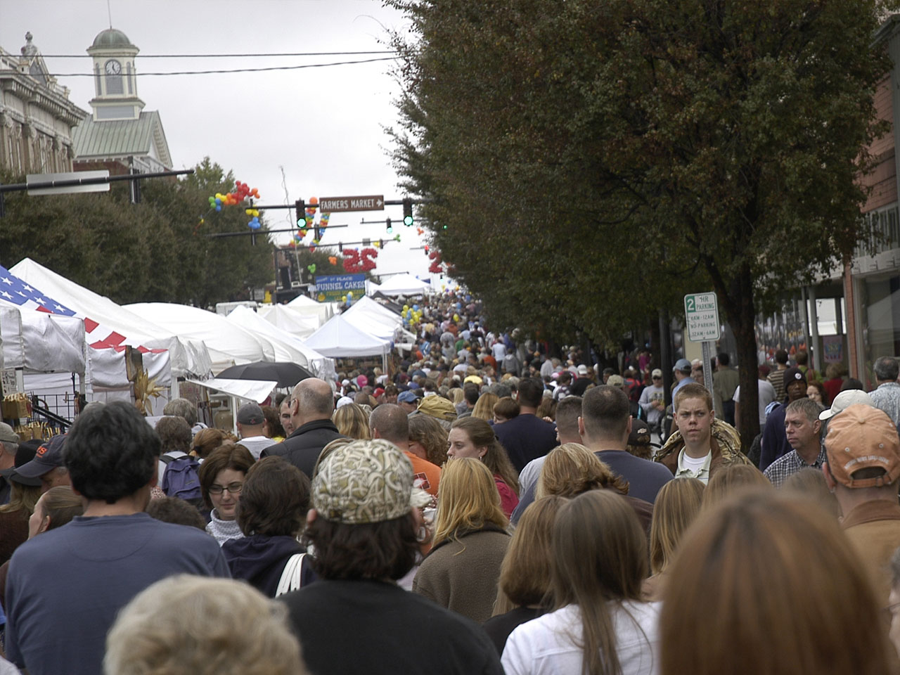
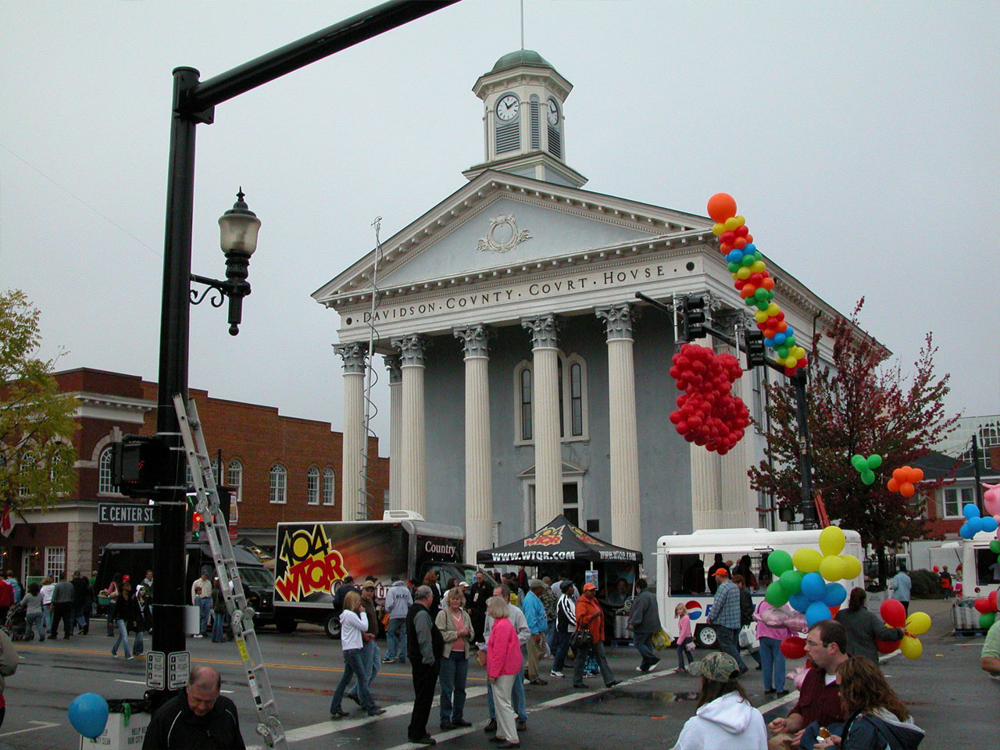
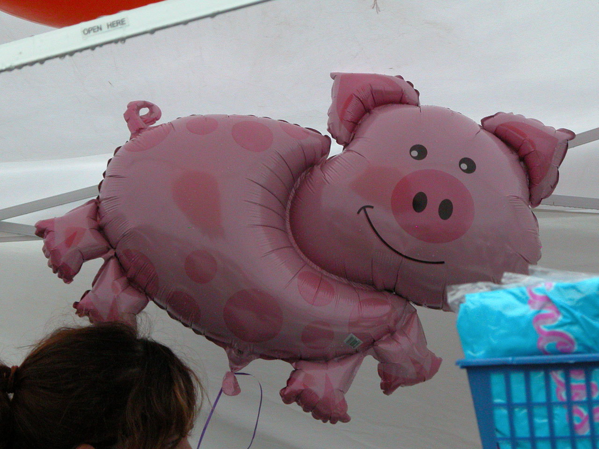

an event · NCLexington Barbecue Festival
also: the Barbecue Festival · Lexington BBQ Festival

A one-day street festival on Main Street in uptown Lexington, Davidson County, each October since 1984, built on the town's pork-shoulder barbecue: up to twenty area restaurants cook and sell, several blocks close to traffic, and hundreds of other vendors sell crafts and fudge around them. Wikipedia's article says it draws as many as 200,000 people; the first festival drew 30,000 and 3,000 pounds of barbecue, and by 1994 the count was over 100,000 and 11,000 pounds. Since 2007 it holds a title from the General Assembly — Official Food Festival of the Piedmont Triad Region of the State of North Carolina. The 2026 festival is planned for October 24.
The story Cited · wp-lexington-barbecue-festival
The idea came from Joe Sink Jr., publisher of Lexington's daily, The Dispatch, in 1983; the bank BB&T hired Kay Saintsing to study whether a festival could work, the study found Lexington already a weekend destination for barbecue, and the first festival was held on October 27, 1984. In 1995 the North Carolina Championship Pork Cook-Off joined it, so that Piedmont crowds could watch eastern whole-hog cooks at work in the capital of the shoulder. NC By Train sets up a temporary stop a block away for the day, served by Amtrak's Carolinian and Piedmont. The 2020 festival went virtual. The politics is the story the festival tells about itself under the heading 'Pork-Barrel Politics'. In 2006 House Bill 21 and Senate Bill 47 would have made it the official barbecue festival of North Carolina; the east read that as making Lexington the official barbecue, nearly half the state prefers the other kind, and neither bill passed. In 2007 House Bill 433 gave it the Piedmont Triad title instead — a designation that names a region and so leaves the east out of the question. Jerry Bledsoe, the 'world's leading, foremost barbecue authority' by his own account, said that Dennis Rogers of the Raleigh News & Observer, the self-styled 'oracle of the holy grub', had ruined the state's chances of distinction in barbecue. Eastern vendors turn up on Main Street each year; the article calls the controversy mild, and sometimes not so mild.
How it is done Cited · wp-lexington-barbecue-festival
One Saturday in October: Main Street closes, the restaurants set up on the street, and the plate is Lexington's — chopped or sliced shoulder with red slaw and hush puppies, the dip on the meat. Around it are four hundred or more vendors, live music on up to five stages, lumberjack games and street performers. Visitors come by car and, for the day, by train.
Today Cited · wp-lexington-barbecue-festival
Held each October; the 2026 date is October 24. It is listed in 1,000 Places to See in the USA & Canada Before You Die, and in 2012 U.S. News & World Report ranked Lexington fourth among the country's barbecue cities.
Facts
| state | NC |
|---|---|
| when | one Saturday in October; October 24, 2026 |
| founded | 1984 |
| status | open |
| styles | Lexington-style barbecue |
| region | The North Carolina Piedmont, North Carolina |
| address | Main Street, Lexington, NC, 27292 · Davidson County Cited · wp-lexington-barbecue-festival |
| where | 35.8261, -80.2510 (street) · OpenStreetMap · open in maps Harvested · osm |
| links | Lexington Barbecue Festival — Wikipedia |
| confidence | high · updated 2026-09-15 |
Not to be confused with
- Lexington-style barbecue — The festival is one Saturday; the style is the town's everyday food.
- Lexington Barbecue — Lexington Barbecue is a restaurant, founded 1962; the Festival is a street event, founded 1984.
Its kin
Who points back
Pictures
{kind=link}

{kind=link}

{kind=link}

{kind=link}
Sources
- Lexington Barbecue Festival — Wikipedia · link
- Barbecue in North Carolina — Wikipedia · link
- Lexington, North Carolina — Wikipedia · link
- Barbecue in the United States — Wikipedia · link
- North Carolina Barbecue Society — Wikipedia · link
- OpenStreetMap — places tagged cuisine=barbecue in North Carolina and South Carolina · link
Where it came from: Cited a source we name · Harvested pulled from an open dataset · Tradition what the tradition says, hedged · Inference this project's reasoning · Field somebody stood there. This record as JSON.